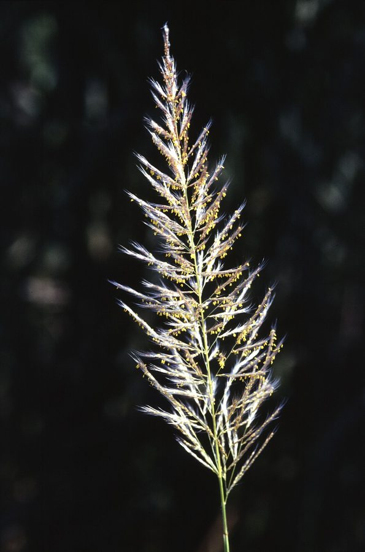

काँसKans Grass
Saccharum spontaneum · Poaceae · FLR-0082

- Scientific name
- Saccharum spontaneum L.
- Family
- Poaceae
- Hindi
- काँस
- Status here
- native
- IUCN
- not evaluated
When to look कब देखें
Present all year.
काँस / Kans Grass
Saccharum spontaneum L. — Poaceae
काँस (काँस घास / जंगली गन्ना / थैच ग्रास) — पूर्वी उत्तर प्रदेश में घाघरा और राप्ती नदियों के रेतीले किनारों (sandy floodplains), नहरों के तटबंधों और जलभराव वाले मैदानी इलाकों में उगने वाली एक विशाल, बहुवर्षीय और अत्यंत सुंदर घास (tall robust perennial grass) है। यह मूल रूप से भारत की मूल निवासी (native) है। इसकी सबसे बड़ी पहचान शरद ऋतु (अगस्त-अक्टूबर) के दौरान आने वाले इसके विशाल, चांदी जैसे चमकीले सफ़ेद और रेशमी फूल (silvery white feathery panicles) हैं, जो हवा चलने पर एक लहर की तरह लहराते हैं। यह दृश्य उत्तर प्रदेश के ग्रामीण इलाकों में मॉनसून के जाने का और त्योहारी सीजन (दुर्गा पूजा/दिवाली) के आगमन का प्रतीक माना जाता है। इसकी ऊंचाई 1.5 से 4 मीटर तक हो सकती है। इसकी जड़ें मिट्टी को बहुत मजबूती से बांधती हैं, जिसके कारण यह नदियों के किनारों को कटने से बचाने (soil binding/erosion prevention) में महत्वपूर्ण भूमिका निभाती है। हालांकि, खेतों में उगने पर यह एक जिद्दी खरपतवार बन जाती है जो फसलों से मुकाबला करती है। ग्रामीण क्षेत्रों में इसके तनों का उपयोग छप्पर (thatching) और टोकरियाँ (basketry) बनाने के लिए किया जाता है।
Quick Identification त्वरित पहचान
| Feature | Description |
|---|---|
| Plant habit | Tall, erect, clump-forming perennial grass growing 1.5–4 meters high, with extensive underground creeping rhizomes |
| Stems (Culms) | Slender, solid, bamboo-like, green or yellowish, filled with a dry pith (not juicy like sugarcane) |
| Leaves | Very long (50–120 cm) and narrow (5–15 mm), with a white central vein, and sharp, cutting glass-like margins |
| Flowers | Large (20–50 cm), plume-like terminal clusters (panicles), covered in dense, long, silvery-white silk hairs |
| Root system | Extremely deep, branching network of roots and rhizomes that secure loose sandy river soil |
Field tip: Drive near the Rapti river bed in September. Look for vast, dense meadows of tall grass that are completely covered in waving, feather-like silver-white plumes. Touch the leaf edge carefully; it is sharp enough to cut skin like a paper knife.
Morphology आकारिकी
Biometrics (typical measurements of mature plants in the northern Indian plains):
| Measurement | Range |
|---|---|
| Plant height | 1.5–4.0 m |
| Stem diameter | 5–15 mm |
| Leaf blade length | 50–120 cm |
| Leaf blade width | 5–15 mm |
| Panicle flower length | 20–50 cm |
| Weight of 1000 seeds | 0.1–0.15 g |
Stem and Rhizomes: Stems are upright, solid, smooth, with nodes covered in white hairs. The underground creeping stems (rhizomes) spread horizontally, shooting up new stalks to form dense colonies.
Foliage: Linear leaves, with a broad, white, prominent midrib. The leaf margins are finely saw-toothed with silica crystals, making them sharp and cutting.
Flowers: Spikelets arranged in pairs along the branches of the panicle, surrounded by a ring of long, soft, silver-white hairs at the base that help the seeds float on the wind.
Seeds: Tiny, dry grains (caryopsis), dispersed easily by wind and floating river water.
Associated Species / Interactions संबंधित प्रजातियाँ
- Soil Binder: Its deep root web holds sand particles together, preventing seasonal river floods from washing away fertile topsoil along the Ghaghra riverbanks.
- Wildlife Habitat: The dense, tall grass stands provide cover and nesting sites for waders, wild boars, and insectivorous swamp birds.
- Pollinators: Wind-pollinated, releasing massive clouds of light pollen during late summer.
Pests and Diseases कीट और रोग
- Sugarcane Top Borer: Scirpophaga excerptalis caterpillars bore into the growing tips of the grass culms.
- Rust Disease: Caused by Puccinia species, producing orange-brown pustules on leaves.
- Smut Fungus: Sporisorium species infect the flowers, turning the silver plumes into dry black dust.
Traditional and Ethnobotanical Use पारंपरिक और नृवंशवनस्पति उपयोग
- Roof Thatching Timber: The long, solid stems are harvested in winter, dried in the sun, and bound together to make the waterproof roof layer (chhappar) for traditional mud houses.
- Rural Basketry & Mats: The split stems are woven by local artisans to make durable household baskets (delwa), hand fans, and drying mats.
- Ayurvedic Cooling Root: The thick underground roots are boiled in water to prepare a cooling decoction, consumed in traditional medicine to treat burning urination and kidney stones.
- Soil Erosion Barrier: Planted by forest departments along new canal embankments and sandy road cuts to bind the loose soil and prevent landslips.
Expected Locally स्थानीय रूप से अपेक्षित
Not a field record. Written from published accounts for eastern Uttar Pradesh. No confirmed local sighting yet — if you have seen it, that is what the atlas needs.
अभी तक स्थानीय पुष्टि नहीं। यह विवरण प्रकाशित स्रोतों से है, किसी अवलोकन से नहीं।
An iconic and culturally beloved native grass throughout the Basti district, regularly observed in the active floodplains of the Ghaghra and Rapti rivers in the Harraiya and Vikramjot blocks. Residents state that when the kans flowers turn silver-white in September, it signifies the end of the monsoon (Barkha Ritu) and the start of the festive autumn season. The dry stems are also collected after Diwali for heating fires in winter (alaav).
Distribution वितरण
Global range: Native to South Asia (India, Pakistan, Nepal, Bangladesh) and Southeast Asia; now naturalized in parts of the Middle East and East Africa.
In India: Found throughout all major river systems, floodplains, and wetland borders.
In Uttar Pradesh: Abundant state-wide along all major Gangetic riverbanks.
In Basti district / eastern UP: Widespread along all riverine blocks.
Research Questions शोध प्रश्न
Anyone can investigate these | कोई भी इन प्रश्नों की जाँच कर सकता है
- How many centimeters does a Kans Grass clump spread horizontally via underground rhizomes in a single year? — Measure clump borders over seasons.
- What is the average wind speed required to detach the silver feathery seeds from the main flower plume in October? — Conduct wind speed trials.
- Do local cows eat mature Kans Grass leaves, or do they only graze on the young green shoots in spring? — Observe livestock grazing choices.
- How many years does a traditional Kans Grass thatched roof last in Basti before it needs replacement? — Interview village house owners.
- Does the planting of Kans Grass on sandy canal banks reduce soil erosion compared to bare banks? / क्या रेतीले नहर के किनारों पर काँस घास लगाने से नंगे किनारों की तुलना में मिट्टी का कटाव कम होता है? — Measure sand erosion rates on different canal slopes.
Similar Species मिलती-जुलती प्रजातियाँ
| Species | How to tell apart | comparison |
|---|---|---|
| Cultivated Sugarcane (Saccharum officinarum) | Much thicker stems (20–40 mm); stems are filled with sweet, sugary juice; leaves are broader, not cutting; flowers are rare | गन्ना — मोटे मीठे तने, चौड़े पत्ते |
| Elephant Grass (Saccharum bengalense / Tripidium bengalense) | Much taller (up to 5–6 m); stems are thicker; leaves are broader; flower plumes are greyish-white and less silky | मूंज / सरकंडा — अधिक ऊँचाई, मूंज रस्सी बनाने में उपयोगी |
| Vetiver / Khus Grass (Chrysopogon zizanioides) | Flower heads are narrow, dark purple (not white and feathery); roots are highly aromatic | खस — खुशबूदार जड़ें, बैंगनी फूल |
Field rule: Tall clump-forming grass (1.5–4 m) growing on river sands, with narrow leaves having cutting glass-like margins and a white central vein, and massive silver-white feathery flower plumes waving in autumn, is the Kans Grass.
Taxonomy & Classification वर्गीकरण
Original description. Carl Linnaeus described the Kans Grass as Saccharum spontaneum in 1771 in his Mantissa Plantarum Altera (p. 183). The type locality was listed as India. The genus name Saccharum is derived from the Greek sakcharon (sugar), which comes from the Sanskrit sharkara. The specific name spontaneum is Latin for wild or growing naturally.
Subspecies. Monotypic — no subspecies are currently recognised in the main index, though many cytotypes and chromosome races (from 2n=40 to 128) exist.
Family and order placement. Placed in the order Poales, family Poaceae (grass family), subfamily Panicoideae, tribe Andropogoneae.
Phylogenetic notes. Saccharum spontaneum is a wild relative of cultivated sugarcane (Saccharum officinarum). It is extensively used in plant breeding programs (sugarcane hybridization) to introduce genes for cold tolerance, disease resistance, and robust root systems.
IUCN status rationale. Not evaluated (NE) by the IUCN Red List. It has a highly secure, abundant wild population across South Asia.
Photo Gallery फोटो गैलरी
References संदर्भ
- Linnaeus, C. (1771). Mantissa Plantarum Altera. Laurentii Salvii, Holmiae, p. 183. [original description]
- Brandis, D. (1906). Indian Trees (includes woody grass species). Archibald Constable & Co., London.
- Kirtikar, K. R. & Basu, B. D. (1935). Indian Medicinal Plants. Vol. IV. Lalit Mohan Basu, Allahabad.
- Bor, N. L. (1960). The Grasses of Burma, Ceylon, India and Pakistan. Pergamon Press, Oxford.
- World Flora Online (2024). Saccharum spontaneum taxon details.
- GBIF Occurrence Data — Saccharum spontaneum, India (2010–2025).
Source file: species/flora/grasses/kans_grass.md